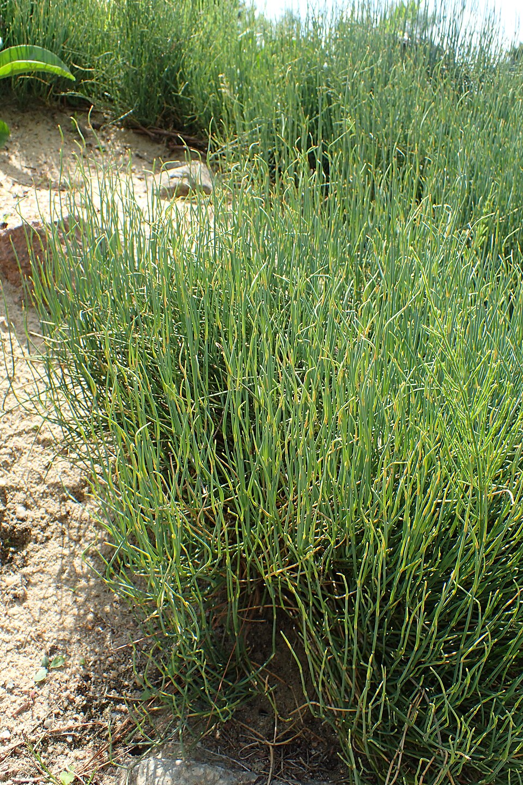
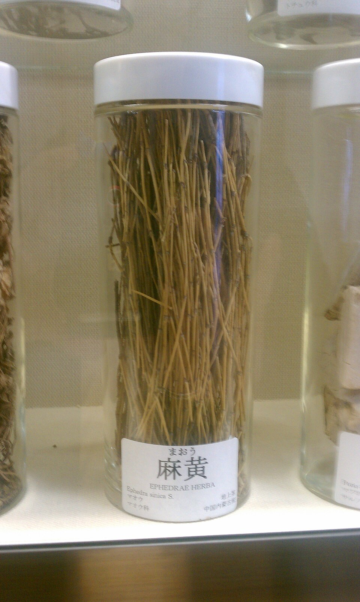

Máhuáng · Ephedra herb麻黄
Ephedrae Herba · Exterior-releasing herbs: acrid-warmEphedrae Herba · 解表药·发散风寒药




- Flavour · nature性味
- acrid, slightly bitter; warm辛、微苦，温
- Channels归经
- Lung, Bladder肺、膀胱经
- Direction升降浮沉
- Acrid, warm, ascending and floating: opens the skin to induce sweating, diffuses lung qi to calm wheezing, and frees the water passages to promote urination辛温升浮，外开皮毛以发汗，上宣肺气以平喘，下通水道以利尿
- Toxicity毒性
- Mildly toxic小毒
- Dose (pharmacopoeia)用量（药典）
- 2–10 g (ceiling 10 g)（上限 10 克）
Decocted; raw to release the exterior, honey-fried for cough and wheeze; Zhang Zhongjing boiled it first and skimmed off the froth煎服；发汗解表宜生用，止咳平喘多蜜炙用；仲景用法先煮麻黄、去上沫 - Pregnancy孕期
- Caution in pregnancy孕妇慎用 No pregnancy restriction in the pharmacopoeia, but NCCIH considers ephedra unsafe in pregnancy and breastfeeding, and the Canadian monograph says to ask a practitioner first. This site treats it as caution: do not use it on your own while pregnant or breastfeeding.药典未列孕期禁忌；美国国家补充与整合健康中心认为孕期与哺乳期使用麻黄不安全，加拿大专论要求孕期、哺乳期使用前先问医务人员。本站按慎用：孕期、哺乳期不要自行使用。
- Health Canada加拿大卫生部
- Health Canada: monograph加拿大卫生部：有专论 The NHPID has an ephedra monograph: no more than 8 mg l-ephedrine per dose and 8–32 mg a day (about 400–1,600 mg of crude herb a day), with a practitioner consulted beyond 7 days; the only authorised use is relief of nasal congestion, for adults 18 and over, and MAO inhibitors are a contraindication (monograph dated 27 February 2026). A 2006 Health Canada notice adds that ephedrine-caffeine combinations are not authorised. Ephedrine is also a controlled precursor chemical in Canada.加拿大天然保健品数据库有麻黄专论：每次左旋麻黄碱不超过 8 毫克、每日 8–32 毫克（约合生药每日 400–1,600 毫克），超过 7 天须咨询医务人员；批准用途只有缓解鼻塞，适用于 18 岁以上；单胺氧化酶抑制剂为禁忌。以上据 2026 年 2 月 27 日版专论。另据加拿大卫生部 2006 年公告，麻黄碱与咖啡因的组合不获批准。另：麻黄碱在加拿大属前体化学品管制。
- Conservation资源与保护
- China licenses wild harvesting and trade in ephedra (an ephedrine precursor); no CITES listing.中国对野生麻黄采挖与麻黄草购销实行许可管理（麻黄碱前体），无国际贸易公约管制。
- Source来源
- Ephedra sinica Stapf; Ephedra intermedia Schrenk et C. A. Mey.; Ephedra equisetina Bge.. The dried green (herbaceous) stems of three Ephedra speciesEphedra sinica Stapf（草麻黄）；Ephedra intermedia Schrenk et C. A. Mey.（中麻黄）；Ephedra equisetina Bge.（木贼麻黄）。麻黄科植物的干燥草质茎
Toxicity: what goes wrong毒理：会出什么事
Not a 'poison' in the classical sense; the risk is pharmacological. Ephedrine is a sympathomimetic, and too much causes palpitations, raised blood pressure, headache, insomnia, agitation, sweating and difficulty passing urine. The US banned dietary supplements containing ephedra alkaloids in 2004 after heart and stroke events.不是传统意义的「毒药」，风险来自药理：麻黄碱是拟交感胺，过量表现为心慌、血压升高、头痛、失眠、烦躁、出汗、排尿困难；美国 2004 年因心脑血管不良事件禁售含麻黄生物碱的膳食补充剂。
Traditional actions and indications功效与主治（传统）
🏛 Traditional statements, not efficacy claims; the modern evidence is graded further down.以下为传统说法，不是疗效主张；现代证据见下文分级。
- Induces sweating and dispels cold发汗散寒
- Diffuses the lungs and calms wheezing宣肺平喘
- Promotes urination and reduces swelling利水消肿
Wind-cold with chills and no sweating (exterior excess); chest oppression, wheezing and cough; 'wind-water' oedema with an exterior pattern. Honey-fried Ma Huang moistens the lungs and is used for cough and wheeze once the exterior has resolved.风寒感冒、恶寒无汗的表实证；胸闷喘咳；风水浮肿（水肿兼表证）。蜜麻黄润肺止咳，多用于表证已解的气喘咳嗽。
How to recognise it怎么认
Growing植株 A small shrubby plant almost without leaves; slender green jointed stems with papery scale-leaves at the nodes, like a horsetail; female plants bear red fleshy 'berries' in autumn.小灌木状草本，几乎无叶；绿色细长的草质茎一节一节，节上有膜质鳞叶，外形像木贼；雌株秋季结红色肉质的「麻黄果」。
Decoction pieces饮片 Short cylindrical sections 1–2 mm thick, pale to yellow-green with fine ridges and a slightly rough feel; clear nodes with papery scale-leaves; the pith on the cut face is red-brown (the 'rose heart'). Faint aroma; astringent, slightly bitter.细长圆柱形小段，直径 1–2 毫米，表面淡绿至黄绿色，有细纵棱，触之微有粗糙感；节明显，节上有膜质鳞叶；断面髓部红棕色（「玫瑰心」）。气微香，味涩、微苦。
Processing炮制
- Raw Ma Huang生麻黄：: Strongly diaphoretic, for wind-cold exterior excess发汗力强，用于风寒表实
- Honey-fried Ma Huang蜜麻黄：: Less diaphoretic; mainly moistens the lungs, stops cough and calms wheezing发汗力减，润肺止咳平喘为主
- Ma Huang floss麻黄绒：: Crushed to floss with the powder sifted out; gentler, for the elderly, children and the weak碾绒去粉，作用更缓，用于老人、小儿与体虚者
Cautions and incompatibilities使用注意与配伍禁忌
Use with caution with spontaneous sweating from exterior deficiency, night sweats from yin deficiency or wheezing from lung-kidney deficiency; avoid with high blood pressure, heart disease, hyperthyroidism, glaucoma, enlarged prostate or insomnia; never with caffeine or other stimulants; athletes beware doping rules.表虚自汗、阴虚盗汗、肺肾虚喘者慎用；高血压、心脏病、甲亢、青光眼、前列腺增生、失眠者避免；不与咖啡因等兴奋剂同用；运动员注意兴奋剂规则。
Interactions with medicines与西药的相互作用
- E3 MAO inhibitors (such as phenelzine)单胺氧化酶抑制剂（如苯乙肼）：: Can trigger a hypertensive crisis; do not combine (Canadian monograph: nor within 2 weeks of stopping one).可诱发高血压危象，属禁忌合用（加拿大专论：停用后 2 周内也不可用）。
- E3 Caffeine and other stimulants咖啡因及其他兴奋剂：: Adds up the cardiovascular risk; Canada does not authorise ephedrine-caffeine products.心血管不良事件叠加；加拿大不批准麻黄碱与咖啡因合用的产品。
- E4 Blood-pressure medicines降压药：: Ephedrine raises blood pressure and works against them.麻黄碱升压，与降压药作用相反。
Modern research, graded现代研究（分级）
- E2 Ephedrine and pseudoephedrine are well-characterised sympathomimetics that dilate the bronchi and constrict nasal vessels, one of the few places where the traditional 'calms wheezing' lines up with modern pharmacology.麻黄碱与伪麻黄碱是明确的拟交感药，扩张支气管、收缩鼻黏膜血管——这是传统「平喘」「通鼻窍」与现代药理对得上的少数例子之一。
- E3 Ephedra slimming and sports supplements were linked to heart and stroke events, the basis for the 2004 US ban and Canada's limits.含麻黄的减肥与运动补充剂与心脑血管事件相关，这是美国 2004 年禁售、加拿大限量的依据。
In the classics古籍原文
「麻黃味苦溫無毒。主治中風傷寒頭痛，溫瘧，發表出汗，去邪熱氣，止欬逆上氣」——神农本草经
Shennong Bencao Jing (Divine Farmer's Materia Medica)
The Shennong Bencao Jing puts Ma Huang in its middle grade; 'releases the exterior and induces sweating' and 'stops cough and counterflow qi' are the roots of its two later uses: releasing the exterior and calming wheezing.《神农本草经》列麻黄为中品，「发表出汗」「止咳逆上气」两句，就是后世发汗解表、宣肺平喘两大用途的源头。
Where it is used: the web串联：它在哪些方里、连到哪里
Classical formulas (Shanghan, Jingui)经方（伤寒、金匮）
Later formulas (Song to Qing)时方（宋元明清）
| Formula方 | Role角色 | Dose: original / today剂量：原书／今用 | Partners in the formula同方配伍 |
|---|---|---|---|
| Saposhnikovia Sage-Inspired Powder防风通圣散 | Monarch君 | original text: see the Chinese original五钱 | Fángfēng (Saposhnikovia root)防风 · Jing Jie (schizonepeta)荆芥 · Bòhe (Chinese mint)薄荷 · Dàhuáng (Rhubarb root and rhizome)大黄 · Mang Xiao (mirabilite)芒硝 · Shígāo (Gypsum)石膏 · Huángqín (Baikal skullcap root)黄芩 · Lian Qiao (forsythia fruit)连翘 · Zhi Zi (gardenia fruit)栀子 · Hua Shi (talc)滑石 · Jie Geng (platycodon root)桔梗 · Chuan Xiong (Sichuan lovage rhizome)川芎 · Dāngguī (Chinese Angelica Root)当归 · Báisháo (White peony root)白芍 · Bai Zhu (white atractylodes)白术 · Gāncǎo (Licorice root)甘草 · Sheng Jiang (fresh ginger)生姜 · Cong Bai (scallion white)葱白 |
Folk and single-herb remedies偏方、验方、单方
| Formula方 | Use用法 | Self-use能否自用 |
|---|---|---|
| Ephedra porridge to sweat out an epidemic fever麻黄粥发汗（天行热病） | Food食疗 | Literature record only: not advised for self-use仅作文献记录，不建议自行使用 |
Patterns reached through these formulas经由这些方连到的证
- Taiyang cold damage (wind-cold exterior excess)太阳伤寒（风寒表实） ← Major Blue-Green Dragon Decoction大青龙汤, Kudzu Decoction葛根汤, Ephedra Decoction麻黄汤
- Combined greater-yang and lesser-yin (cold in a yang-deficient person)太少两感（阳虚外感） ← Ephedra, Asarum and Aconite Decoction麻黄细辛附子汤
- Heat congesting the lung (cough and wheeze)邪热壅肺（肺热喘咳） ← Ephedra, Apricot Kernel, Licorice, and Gypsum Decoction麻黄杏仁甘草石膏汤Points穴位 LU5 ChǐzéLU5 尺泽 · LU10 YújìLU10 鱼际 · BL13 FèishūBL13 肺俞 · GV14 DàzhuīGV14 大椎 · LI4 HégǔLI4 合谷Qigong功法 Liuzijue (Six Healing Sounds)六字诀
- Exterior cold with interior fluids外寒内饮 ← Minor Blue-Green Dragon Decoction小青龙汤
Exam notes (HER)考点（HER）
HER essentials: (1) the chief sweat-inducing herb, with Gui Zhi to strengthen sweating (Ma Huang Tang) and with Xing Ren to diffuse and lower lung qi; (2) raw versus honey-fried; (3) Ma Huang root stops sweating, the opposite of the stem; (4) who must avoid it and the modern ephedrine safety issues.HER 必考：①发汗解表第一要药，配桂枝增强发汗（麻黄汤），配杏仁宣降肺气；②生用、蜜炙用途之别；③麻黄根止汗，与麻黄茎相反；④禁忌人群与麻黄碱相关的现代安全问题。
Sources依据
- Chinese Pharmacopoeia Commission. Pharmacopoeia of the People's Republic of China, 2020 edition, vol. I国家药典委员会《中华人民共和国药典》2020 年版一部
- Zhong Gansheng (ed.). Chinese Materia Medica (national TCM higher-education textbook series)钟赣生主编《中药学》（全国中医药行业高等教育规划教材）
- NCCIH. Ephedra ↗
- Health Canada, NHPID monograph: Ephedra – Ephedra sinica (2026-02-27) ↗
- Health Canada (2006). Health Canada advises consumers not to use weight loss products containing ephedrine and caffeine ↗